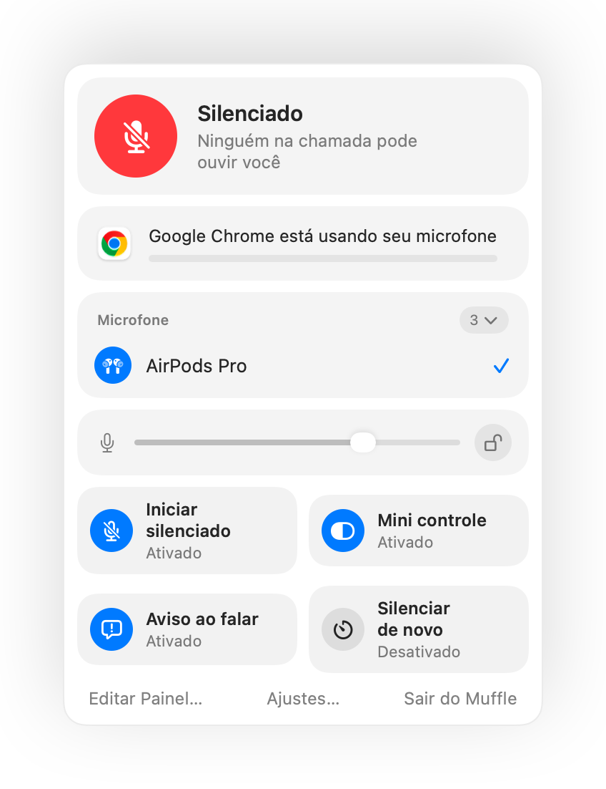

Push to talk no Mac, em qualquer app
O push to talk mantém você silenciado até segurar uma tecla. É a forma mais fácil de evitar ruídos em reuniões grandes ou no home office, mas poucos apps oferecem essa função, e cada um usa uma tecla diferente.
O Muffle adiciona a função pressione para falar a qualquer app no Mac. Escolha “Pressione para falar” nos Ajustes, segure o atalho para falar e solte para silenciar de novo.
Experimente o Muffle grátis por 3 diasEm breve na Mac App Store
Como usar o push to talk
- Instale o Muffle.
- Nos Ajustes do Muffle, defina o Modo do atalho como “Pressione para falar”.
- Segure Control-Option-M enquanto você fala.
- Solte. Você está silenciado novamente.

- Prefere uma tecla só? Defina uma tecla para falar nos Ajustes: ⌥ Direita, fn ou um botão extra do mouse.
- Escolha um atalho confortável nos Ajustes do Muffle, por exemplo uma tecla F.
Perguntas frequentes
O push to talk funciona no Google Meet?
Sim. O Muffle silencia o microfone diretamente, então o push to talk funciona no Meet, Zoom, Teams, Discord e qualquer outro app.
Existe a opção de pressionar para silenciar?
Sim. Escolha “Pressione para silenciar” e segure o atalho para silenciar por um momento, como um botão de tosse.